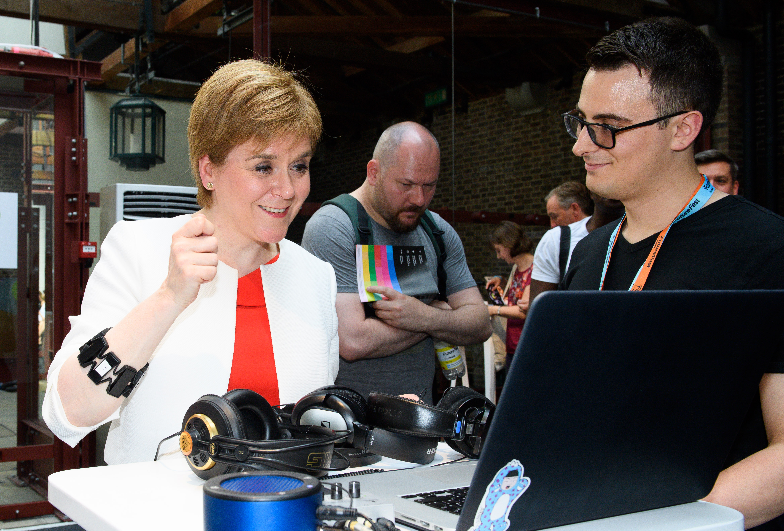

The BioMusical Instrument project will create a product prototype of a wearable digital musical instrument based on biosignals from the performer’s muscles. It will allow musicians to perform electronic sounds from bodily gestures. Muscle tension will be sensed by innovative new electromyogram sensing hardware packaged in an ergonomic housing and coupled to wireless communication. Sophisticated machine learning methods developed in the ERC MetaGesture Music and H2020 Rapid-Mix projects will track musician gesture and create meaningful relationships with computer-based synthesized sound. The BioMusical Instrument will be marketed to three distinct application areas: First, it will enable “hands-free” performance of electronic music. Second, the visualization of body states will make it a useful training tool in traditional musical instrument pedagogy. Finally, the sonification of physiological signals will allow the instrument to be used in the health sector in physical rehabilitation exercises. The BioMusical Instrument will be the first product to combine EMG sensing, machine learning, and advanced audio signal processing. We have identified partners in the biomedical hardware field, the music technology industry, and rehabilitation research with whom we will benchmark and evaluate the product prototype.
Project link
Balandino covered the role of Co-Investigator, interaction designer and developer.

First Minister of Scotland Nicola Sturgeon meets developer Balandino Di Donato and tries BioMusic by Atau Tanaka, a wearable digital musical instrument which uses gestures to create sounds, which is part of the Bio-Body-Tech room curated by body>data>space at Nesta's FutureFest at Tobacco Dock in London's Docklands.
Friday July 6, 2018. Photo Credit: Jonathan Hordle/PA Wire
Zbyszyński, M., Di Donato, B., Tanaka, A. (2019) Gesture-Timbre Space: Multidimensional Feature Mapping Using Machine Learning and Concatenative Synthesis. 14th International Symposium on Computer Music Multidisciplinary Research (CMMR), Marseille, France. (PDF)
Tanaka, A., Di Donato, B., Zbyszyński, M. (2019) Designing Gestures for Continuous Sonic Interaction. Proceedings of the International conference on New Interfaces for Musical Expression (NIME). June 3-6, Porto Allegre, Brazil. (PDF)
Zbyszyński, M., Di Donato, B., Tanaka, A. (2019) The Effect of Co-adaptive Learning & Feedback in Interactive Machine Learning. In ACM CHI’19 Human-Centered Machine Learning Perspectives Workshop. May 5–9, 2019, Glasgow, United Kingdom. (PDF)
Di Donato, B., and Tychonas Michailidis (2019) Accessible interactive digital signage for visually impaired. ACM CHI'19 Workshop on Mid-Air Haptics Interfaces for Interactive Digital Signage and Kiosks. May 5–9, 2019, Glasgow, United Kingdom. (PDF)
Di Donato, B., Tanaka, A. (2018) and Myo Mapper, Myo armband to OSC mapper. European Research Music Conference. Barcelona, Spain. (PDF)